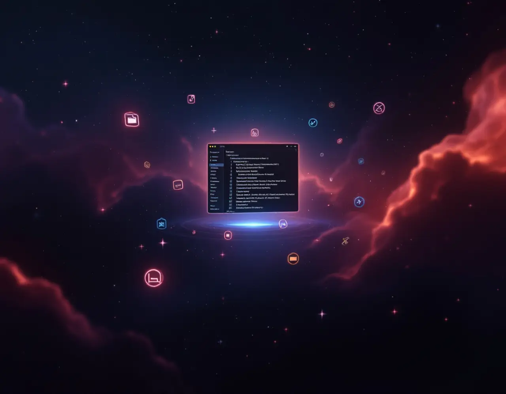

ИИ. Новая реальность · онлайн-поток 3 · занятие 8 · 21 ноября 2026
Что вы теперь делаете иначе?
Выпускной урок. Семь занятий в одной карте, живой тест и первое исследование в вашем Codex.
Выпускной урок. Семь занятий в одной карте, живой тест и первое исследование в вашем Codex.
семь рабочих решений
тест, разбор и манифест
подготовить рабочую папку
установить и проверить навык
сертификат и следующий шаг
как модель обращается с фактами
какое решение предстоит
какие шаги и проверки нужны
чем выполнить их сегодня

Выберите один ответ. После теста увидите сильные темы и вопросы, к которым стоит вернуться.
Это написание попадёт на именной сертификат.
Имя и фамилия полностью. В лобби можно исправить опечатку.
Ведущий видит регистрации. По единому сигналу каждый начинает тест в своём темпе.
После обновления продолжайте на том же устройстве и в том же браузере.
Один вопрос разбираем до понятного действия.
Почему неверный вариант выглядел убедительно?
Какой контекст, ограничение или проверка были упущены?
Где этот принцип пригодится в вашей работе завтра?
Какому поставщику позвонить первым? Возьмите своё решение. Соберём в Codex двенадцать источников поиска и проверки, затем испытаем связку на вашем вопросе.
Вернитесь во вкладку теста. Ваш именной PDF открывается по команде ведущего.
Проверьте написание и дату выпуска.
Откройте сохранённый файл. Для изображения есть отдельная кнопка PNG.
Скажите ведущему полное имя. Для сверенных выпускников подготовлен отдельный комплект PDF.
Выберите одну задачу, которую повторите самостоятельно на следующей неделе.
Семь шпаргалок этого потока собраны в шестом шаге.
Тридцать готовых заданий на рабочие дни — в библиотеке.
Расскажите, что получилось и где ещё трудно. За отзыв Альберт передаст «Барсетку энтузиаста».